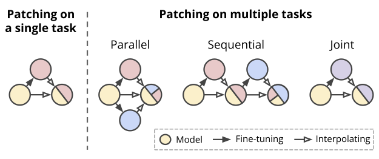

Patching open-vocabulary models by interpolating weights

While open-vocabulary models like CLIP achieve high accuracy across many
image classification tasks, there are still settings where their zero-shot performance
is far from optimal. We study model patching, where the goal is to improve
accuracy on specific tasks (i.e., patching tasks) without degrading accuracy on
tasks where performance is already adequate (i.e., supported tasks). Given a
task to be patched, we first fine-tune without introducing new parameters, then
interpolate the fine-tuned model weights with the model weights before fine-tuning.
We explore model patching on nine tasks where zero-shot CLIP performs poorly,
observing that patching increases accuracy by 15 to 60 percentage points while
preserving accuracy on ImageNet within one percentage point of the zero-shot
model. Additionally, we find that patching is more effective for larger models,
demonstrate that a single model can be patched on multiple tasks, and identify
cases of broad transfer, where patching on one task can increase accuracy on other
tasks even when the classes are not shared. Finally, we investigate applications
beyond standard benchmarks, including a patch which makes CLIP less susceptible
to typographic attacks. Our findings demonstrate that it is possible to expand
the set of tasks on which open-vocabulary models achieve high accuracy without
re-training them from scratch.
Patching interactive demo!
Explore predictions for both a supported task (e.g., CIFAR-10) and a patching task (e.g., MNIST), by
setting an interpolation factor α between 0 and 1.
When α = 0, we have the model θ0, which is the original open-vocabulary model
(i.e., CLIP ViT-B/32).
When α = 1, we have the model θ1, which is fully fine-tuned on MNIST.
α =
Paper (TODO)
Latest version: arXiv:2105.01047 [cs.CV] or here

Team


Bibtex
@article {ilharco2022patching,
title={Patching open-vocabulary models by interpolating weights},
author={Ilharco, Gabriel and Wortsman, Mitchell and Gadre, Samir Yitzhak and Song, Shuran and Hajishirzi, Hannaneh and Kornblith, Simon and Farhadi, Ali and Schmidt, Ludwig},
journal={arXiv},
year={2022}
}
Acknowledgements
We thank Akari Asai, Alex Fang, Ari Holtzman, Pieter-Jan Kindermans, Marco Tulio Ribeiro, Ofir Press, Sarah Pratt, Sewon Min, Thao Nguyen and Tim Dettmers for helpful discussions and feedback, and Hyak at UW for computing support.
Contact
If you have any questions, please contact Gabriel.